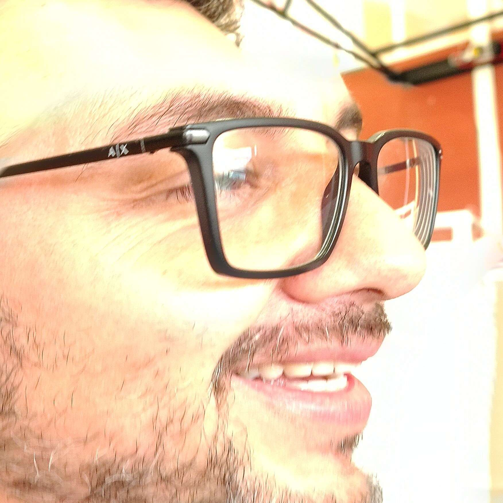
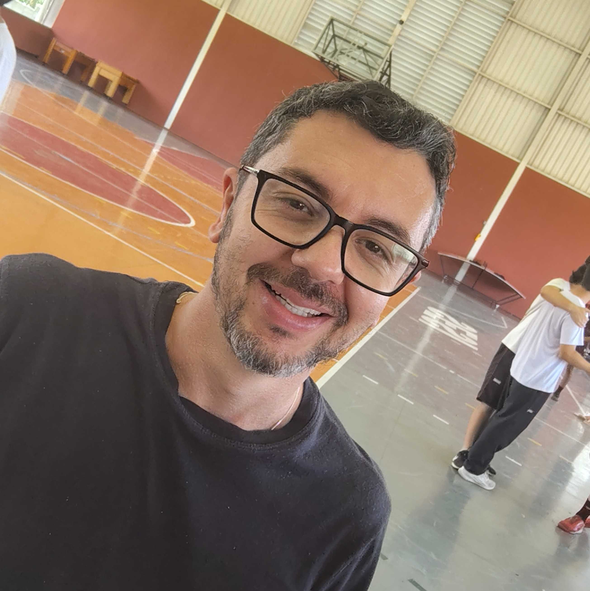
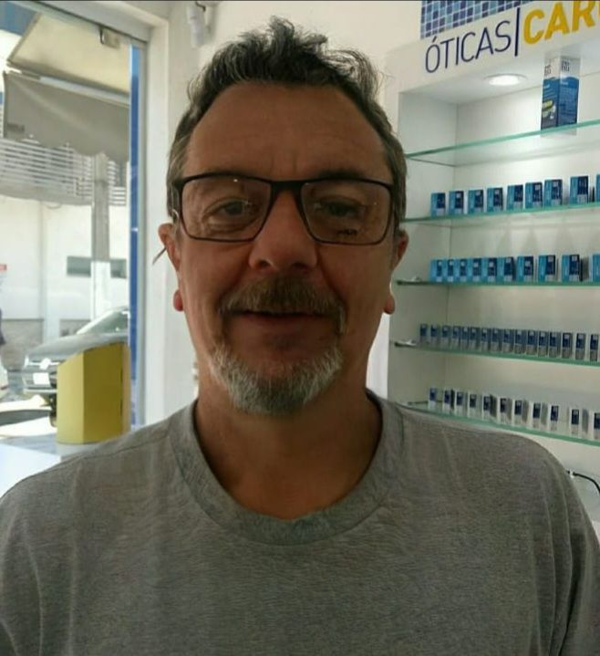

A História do Infravermelho
Em 1800, a luz visível já era compreendida através da decomposição pelo prisma em cores do arco-íris. No entanto, o astrônomo e músico William Herschel decidiu medir a quantidade de calor transportada por cada cor da luz solar.
Usando termômetros com bulbos escurecidos, Herschel mediu as temperaturas do violeta ao vermelho. Ao posicionar um termômetro de controle além do limite da luz vermelha visível, notou algo impressionante: aquele local registrou a maior temperatura de todas.
Herschel havia descoberto uma forma de luz completamente invisível aos olhos humanos, batizada inicialmente de "raios calóricos" e mais tarde de Infravermelho.
Experimento do Prisma
Herschel descobre radiação invisível além da frequência da cor vermelha.
Invenção do Bolômetro
Samuel Pierpont Langley desenvolve o bolômetro para medir radiação térmica com altíssima precisão.
Visão Noturna & Medicina
Desenvolvimento das primeiras câmeras térmicas e sensores militares/médicos.
Cientista & Biografia

Sir William Herschel (1738 – 1822)
Astrônomo e Compositor Germânico-Britânico
- Descoberta do Planeta Urano: Ficou mundialmente famoso em 1781 por identificar o planeta Urano e duas de suas luas.
- Pioneiro do Infravermelho: Provou experimentalmente que calor pode se propagar na forma de luz invisível.
- Construção de Telescópios: Fabricou manualmente os maiores e mais precisos telescópios de refletor de sua época.
Características Físicas da Onda
Comprimento de Onda (λ)
Varia entre 700 nm a 1 mm. Fica situado entre a luz vermelha visível e as micro-ondas.
Frequência (f)
Compreendida entre 300 GHz e 430 THz. Inversamente proporcional ao comprimento de onda.
Radiação Térmica
Todos os corpos com temperatura acima do zero absoluto (0 K ou -273,15 °C) emitem radiação infravermelha.
Calculadora Interativa da Onda
Ajuste a frequência para observar a alteração estimada no comprimento de onda no vácuo (aproximadamente 700nm e 1 nm)
Frequência Selecionada: 200 THz
Comprimento de Onda estimado (λ): 1.5 µm
Aplicações Tecnológicas
Termografia & Câmeras Térmicas
Utilizadas em inspeções elétricas, auditorias de isolamento térmico e por forças de segurança para visão noturna mapeando o calor emitido por alvos.
Controles Remotos & Fibra Óptica
Sinais de infravermelho de curto alcance transmitem comandos para TVs, aparelhos de som e trafegam dados em redes de fibra óptica sem sofrer interferência de luz visível.
Astronomia (Telescópio James Webb)
O infravermelho atravessa nuvens de poeira cósmica espessas, permitindo que astrônomos observem as primeiras galáxias formadas após o Big Bang.
Sensores Industriais & Leitores
Sensores de presença, leitores de código de barra e sistemas de automação usam feixes infravermelhos para detecção e contagem de itens.
Aplicações na Saúde
Fisioterapia Térmica
Lâmpadas de infravermelho penetram nos tecidos profundos, promovendo vasodilatação, alívio de dores musculares e aceleração da recuperação articular.
Termômetros Clínicos sem Contato
Essenciais para medições corporais rápidas e higiênicas através da detecção do fluxo de calor emitido pela artéria temporal ou testa.
Oxímetros de Pulso
Dispositivos de dedo medem a saturação de oxigênio no sangue analisando como a hemoglobina absorve luzes vermelhas e infravermelhas.
Orientador do Projeto
Prof. Ederson
Docente de Física
Projeto educacional desenvolvido para aprofundamento prático nos conceitos do Espectro Eletromagnético, com foco na Radiação Infravermelha e suas contribuições na tecnologia e medicina moderna.
Galeria de Aulas & Laboratório


